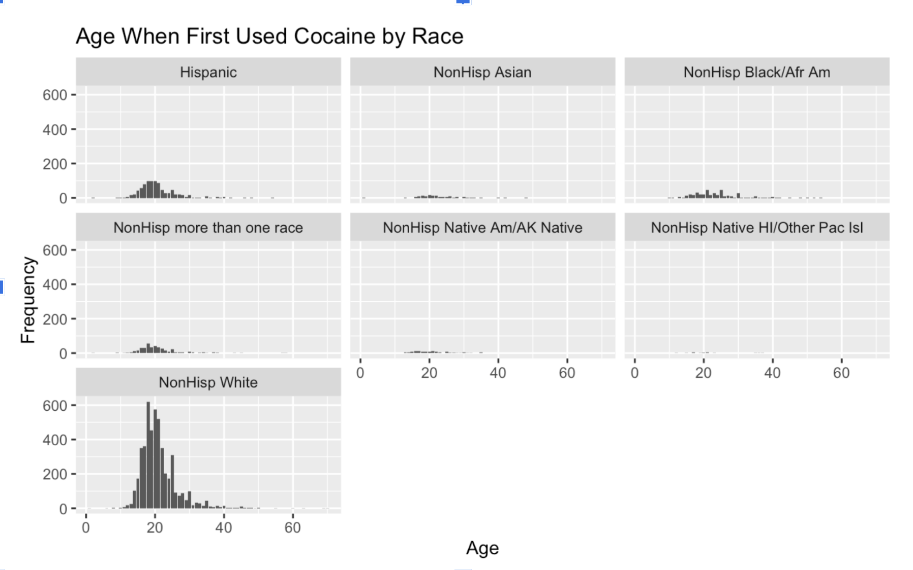
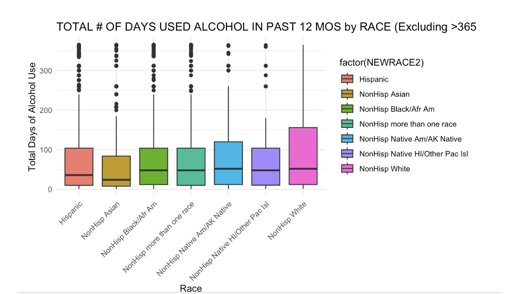
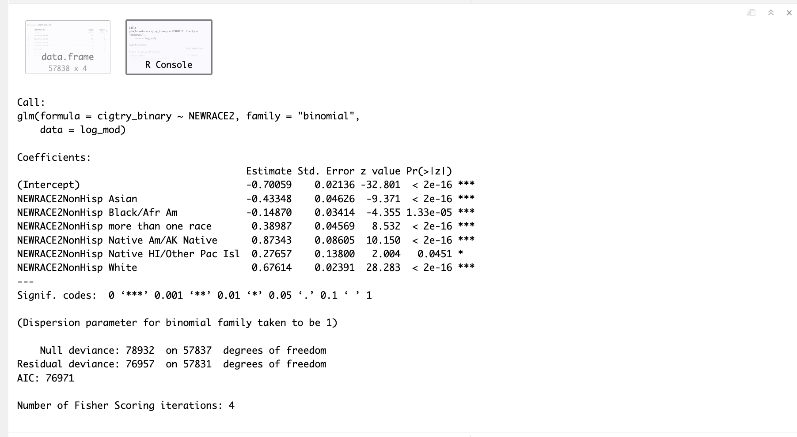
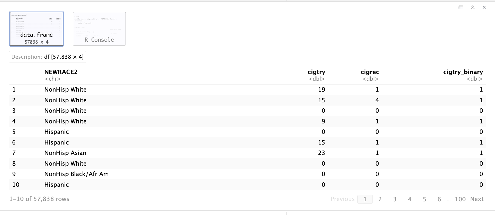

A Look into the Relationships (EDA)
First Plot

This is a plot that shows the ages that people first used cocaine and the plot is faceted by race. On the y-axis, the frequency tells us the number of survey takers that had the same response. This tells us that people in the “NonHisp White” category had the highest number of people who had ever used cocaine, and there is a common trend across all race categories that the most typical age range when cocaine was first used was between 10 and 30 years old. This result is informative, but it also raised a concern because it made us think that the number of respondents per race category was possibly skewed and led us to question how many survey takers fit into each race category.
Second Plot

The boxplot titled “TOTAL # OF DAYS USED ALCOHOL IN PAST 12 MOS by RACE (Excluding >365 days)” visually represents the distribution of the total number of days alcohol was used in the past 12 months across different racial groups. This visualization is particularly useful for understanding the central tendency, variability, and presence of outliers in the data. In detail, the Asian category shows a slightly lower median compared to others, suggesting a marginally lesser median frequency of alcohol use within this group over the period. Notably, the White category exhibits the largest box, indicating greater variability or dispersion in alcohol use days among individuals in this group. Moreover, in this plot, the Hispanic and Black categories show more outliers on the higher end of the spectrum. This suggests that there are more instances of significantly higher alcohol use days in these groups compared to the typical range observed within the groups.
First Model
 
This logistic regression model shows many things that can be broken down into understanding. First the intercept used for this model was the Hispanic population and this is due to the dataset being split into Non Hispanic and Hispanic so using the Hispanic population as a baseline was easier for analysis. The coefficient for the intercept/Hispanic population shows that when all other variables are being held constant, the log odds for Hispanic population is -0.70059. This is just in a sense the baseline to compare to the other races. For the Asian population of this dataset, when converting the log odds to odd ratio, the odds of an Asian population smoking cigarettes is 0.6482 times the odds of Hispanics smoking cigarettes. This means that the odds of the Asian population smoking cigarettes is lower than the Hispanic population. This can be seen for any values less than 1 for race categories but we see a change once we get to Non Hispanics that are more than one race where they are greater than 1 odd ratios meaning they have a higher odd ratio of smoking cigarettes compared to Hispanics. The White race group has the highest odd ratio compared to Hispanics and other groups, making them more likely to smoke cigarettes than Hispanic people. In terms of the numbers from the model, White people in the dataset have 1.9676 times the odds of smoking cigarettes compared to Hispanics.
This model works and fits for this dataset because the p values for each of the variables of races are lower than 0.05 showing they have significant value. The model also predicts that cigarette use and race groups have a significant relationship based on the amount of stars placed on each row, showing an emphasis on the relationship between the two. It suggests that there are differences in race groups for cigarette smoking trying it for the first time which can be explored further with data either from the outside or other variables that might have relationships with it such as income or geographic location.
These are some of the simple relationships we were able to notice upon EDA. Exploring these further is crucial in making key conclusions and hypothesis.